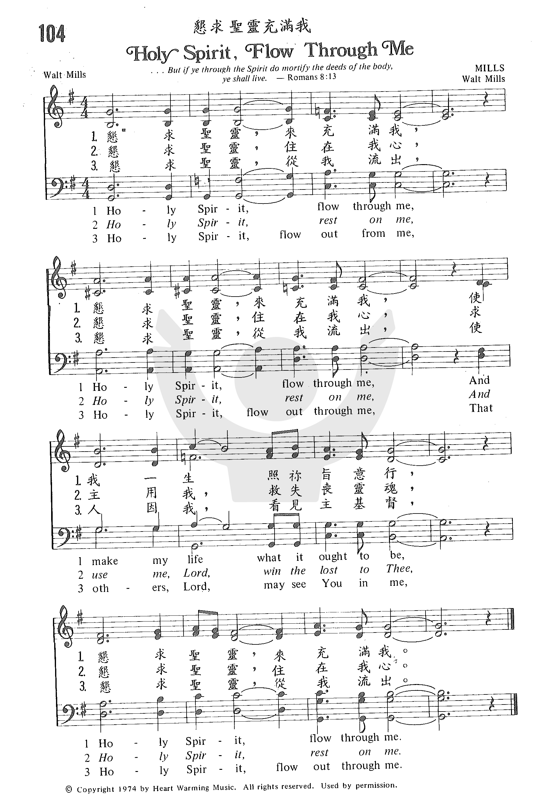

0998
Holy Spirit Flow Through Me
_Walt
Mills
恳求圣灵充满我
|
|
|
|
Holy Spirit flow through me
Holy Spirit flow through me
and make my life what it ought to be
Holy Spirit flow through me
Holy Spirit rest on me
Holy Spirit rest on me
and use me Lord to win the lost to thee
Holy Spirit rest on me
Holy Spirit flow out from me
Holy Spirit flow out from me
That others may see You in me
Holy Spirit flow out from me
Holy Spirit flow out from me |
|
|
https://www.zanmeishige.com/tab/25426.html?songbook=1&index=104
 |
|
|
|
0998
Holy Spirit Flow Through Me
恳求圣灵充满我
|
Short Name: |
Walt Mills |
|
Full Name: |
Mills, Walt, 1936- |
|
Birth Year: |
1936 |
Hymnary.org does not have biographical information about this person.

Tune Information
|
Title: |
[Holy Spirit, flow through me] |
|
Composer: |
Walt Mills |
|
Incipit: |
11117 66222 21775 |
|
Key: |
G
Major |
|
Copyright: |
©
1974 by Heart Warming Music |
Walt is well respected for the quality of music he ministers. One can
tell as he sings, he is singing from his heart out of his love for the
Lord. We offer all of Walt's projects he's recorded during the many
years of ministry he's been involved with. We pray you'll be blessed by
Walt's anointed music!
Born in Dallas Texas, Walt Mills received Christ as His Savior on June
9, 1954. By the very next year he was preaching the Gospel and sharing
Christ in song and Word.
From March 1959 when Walt entered full-time evangelistic work, he has
continued to travel throughout the United States and foreign countries
presenting the Good News. Millions have seen his popular television
program, Revival in the Land Today each week on the Trinity Broadcasting
Network, as well as being heard on world wide radio. Walt preaches the
Word of God with power and without compromise. When he preaches the
anointed message, people are challenged and stirred by the message of
hope and deliverance. Lives are changed, miracles happen, the lost are
saved, and the wayward come home.
The music and worship that characterize Walt Mills ministry continues to
touch the hearts of individuals all over the world. He has his own
unique style and with his soulful voice he presents a message in song
that gets right down into your spirit. The freedom of worship in his
music brings the listener to a place of hope and encouragement resulting
in life changes.
With his songs consistently on the charts, Walt has recorded such great
Gospel hits as, I've Got a Feeling which was number one for three months
and remained on the charts for two years. This song was nominated for a
Dove Award. Other songs recorded by Walt that went on to become Gospel
favorites were, Heaven Will Be My Home, Where the Timbers Cross and The
Devil's in the Phone Booth Dialing 911.
A number of songs have been written by Walt through the leading of the
Holy Spirit. His songwriting credits include Heaven Will Be My Home (on
the charts for 10 months), Holy Spirit, Flow Through Me (continues to be
loved after 25 years), I'm On My Way To Heaven, and The Journey Gets
Sweeter Every Day, He Loves You, Cast Your Care Upon Him and many more.
Numerous times over the years, his songs have been nominated for Dove
Awards.
His many accomplishments include:
Mr. ICGMA of 1993 (International Country Gospel Music Association)
Artist of the Decade in 1993
ICGMA Hall of Fame in 1993
Texas Southern Gospel Music Hall of Fame
ICGMA Top Television Personality in 1995
Although these prestigious awards were give to Walt as a country Gospel
artist, his projects present music in a style that reaches people of all
ages - from the toddler to those in their senior years and all in
between. Regardless of your music preference, you will find something in
Walt Mills recordings that will touch your heart. Come taste and see the
Glory of God and you will never be the same
https://www.facebook.com/WaltMillsMinistry/
https://www.facebook.com/WaltMillsMinistry/